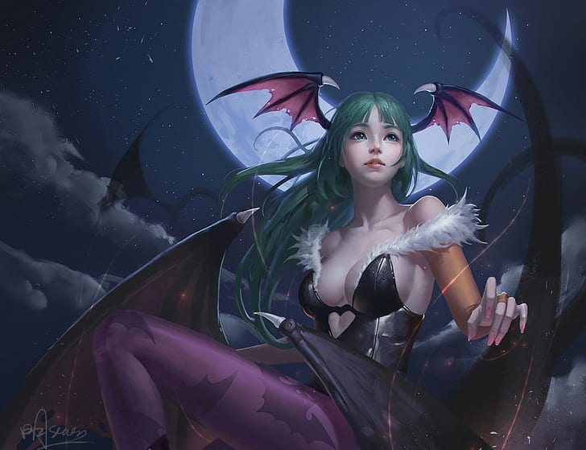

Mi dibujo animado favorito
|  |
Es un personaje ficticio de los videojuegos de lucha de la saga Darkstalkers. Su primera aparición fue en el videojuegoVampire: The Night Warriors |
| Una mujer hermosa con cabello largo y liso de color verde esmeralda y alas de murciélago en la espalda y los lados de la cabeza. Su cabello es un corte hime, que era un signo utilizado a menudo en las multimedias japonesas para indicar que una mujer era acaudalada o de alto estatus. |
| Para su atuendo, consiste en un leotardo negro sin mangas con plumas en el borde que revela principalmente su escote con un corte en forma de corazón debajo de su busto, medias moradas o magenta/rosa fuerte con patrones en forma de murciélagos, guantes de color rosa claro que cubren el dedo mayor y botas negras de tacón hasta la altura de la pantorrilla.o |